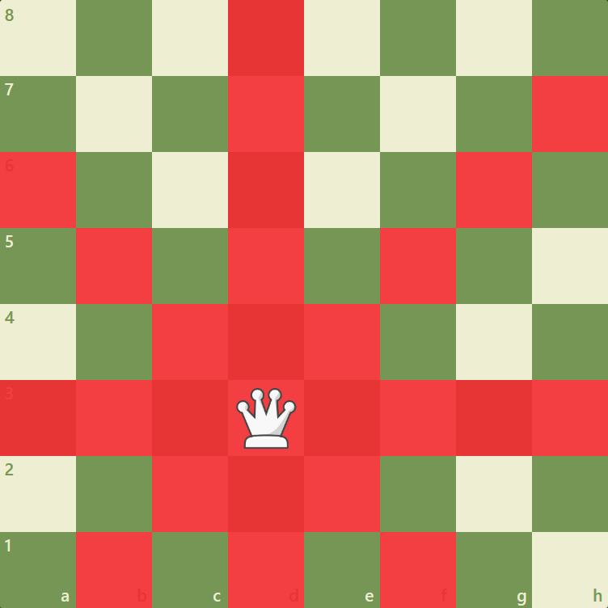
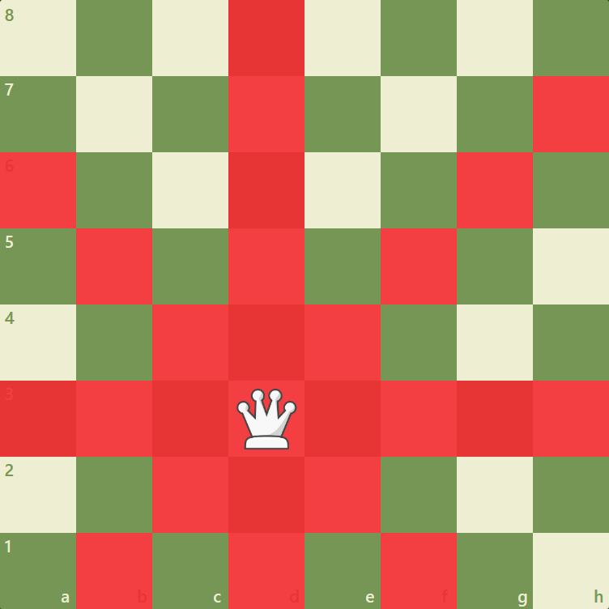

Chess
- Genre: Board Game, Abstract Strategy Game, and Mind Sport
- Players: 2-Player Game
- Playing Time: Casual games usually last 10 to 60 minutes; tournament games last anywhere from about 10 minutes (fast chess) to 6 hours or more.
About the Game
Chess is a board game between two players. It is sometimes called international chess or Western chess to distinguish it from related games, such as xiangqi (Chinese chess) and shogi (Japanese chess). The current form of the game emerged in Spain and the rest of Southern Europe during the second half of the 15th century after evolving from chaturanga, a similar but much older game of Indian origin. Today, chess is one of the world's most popular games, played by millions of people worldwide. Chess is an abstract strategy game and involves no hidden information. It is played on a chessboard with 64 squares arranged in an eight-by-eight grid. At the start, each player controls sixteen pieces: one king, one queen, two rooks, two bishops, two knights, and eight pawns. The player controlling the white pieces moves first, followed by the player controlling the black pieces. The object of the game is to checkmate the opponent's king, whereby the king is under immediate attack (in "check") and there is no way for it to escape. There are also several ways a game can end in a draw. Organized chess arose in the 19th century. Chess competition today is governed internationally by FIDE. The first universally recognized World Chess Champion, Wilhelm Steinitz, claimed his title in 1886; Magnus Carlsen is the current World Champion. A huge body of chess theory has developed since the game's inception. Aspects of art are found in chess composition, and chess in its turn influenced Western culture and art, and has connections with other fields such as mathematics, computer science, and psychology. One of the goals of early computer scientists was to create a chess-playing machine. In 1997, Deep Blue became the first computer to beat the reigning World Champion in a match when it defeated Garry Kasparov. Today's chess engines are significantly stronger than the best human players and have deeply influenced the development of chess theory.

Rules
Chess pieces are divided into two different colored sets. While the sets might not be literally white and black (e.g. the light set may be a yellowish or off-white color, the dark set may be brown or red), they are always referred to as "white" and "black". The players of the sets are referred to as White and Black, respectively. Each set consists of sixteen pieces: one king, one queen, two rooks, two bishops, two knights, and eight pawns. Chess sets come in a wide variety of styles; for competition, the Staunton pattern is preferred.
Basic Set Up:
Movement Options:
 



List of prominent Chess Masters:
- Garry Kasparov
- Magnus Carlsen
- Bobby Fischer
- Jose Raul Capablanca
- Anatoly Karpov
"To become good at anything you have to know how to apply basic principles. To become great at it, you have to know when to violate those principles.”- Gary Kasparov (Former World Chess Champion)